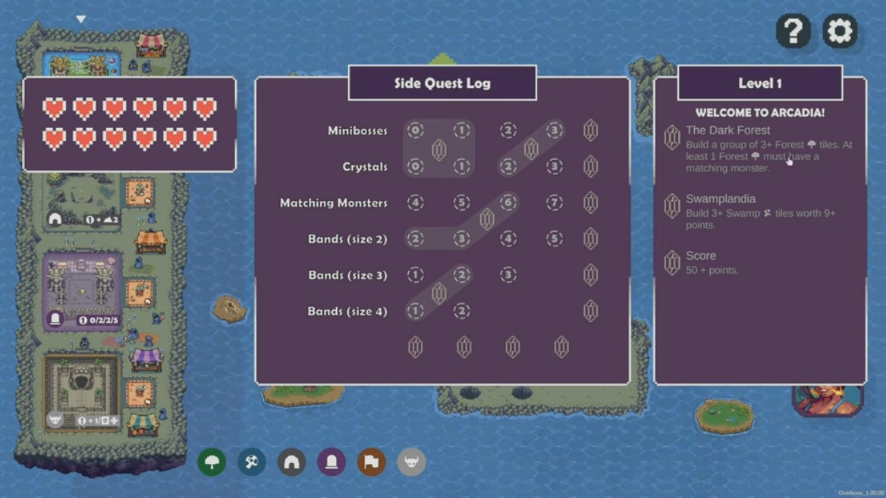
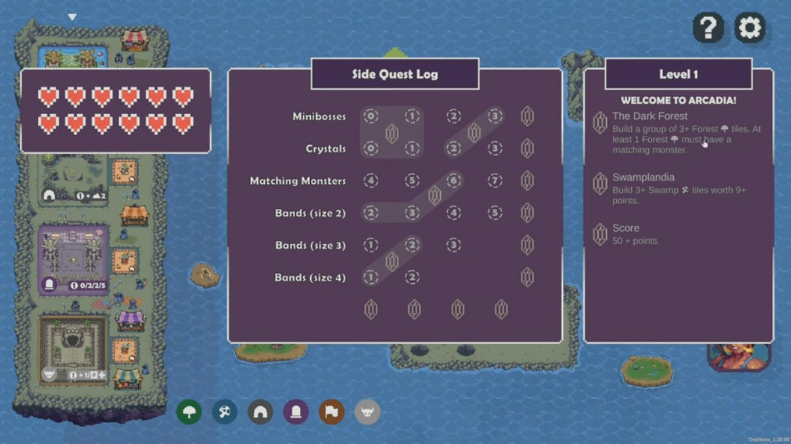

Overboss is originally a board-game published by Brotherwise Games. To play, the players place tiles and tokens on their board. The goal is to be the one to make the most points. The video game adaptation was made at BlanketGames (formerly TavroxGames) and published by GoblinzStudio. I personnaly worked around six months on the project during my work-study program and the engine used was Unity.
We were a really small team, with at the peak of the development three programmers but otherwise two. I started on the project by making the whole campaign part, which consists of several menus but also goals to achieve and side quests in game.
 

I added a few things to the gameplay like Command Cards for example (bonuses that you can use when you make the pattern indicated on them with your tiles), but mostly had a part in the UI side of the game. There was a lot to rework (things had been done quickly before my arrival to fit the demo release deadline) and we had to make it gamepad compatible as the game would release on several consoles. Overboss would also be translated in many languages (spanish, german, korean, japanese, etc...) which means that all UI needed to accomodate to longer or shorter texts.
Gamepad and localization being added afterward and not during the development was a huge slowdown and made the task much more laborious.
Overboss was also the occasion to participate to the debug phase. There was a lot of work to do on this part, and it took several months (and was still ongoing when I left). But I learned a lot about the debugging process and it has helped me greatly in the long run.
It was also my first time programming a tutorial, and seeing how specific we actually have to be if we guide a player through a defined set of actions, step by step for example.